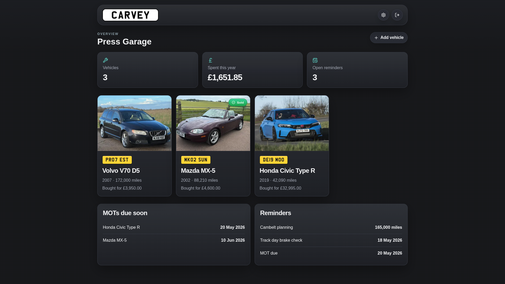

A garage for every car
Make, model, year, mileage, photos and purchase history for each vehicle. Mark cars as sold and keep their history.
Track every service, repair and MOT across all your vehicles, with receipts attached. Self-hosted and local-first, so your data stays on your server.

Features
From oil changes to MOTs, every detail for every vehicle lives in one tidy place.
Make, model, year, mileage, photos and purchase history for each vehicle. Mark cars as sold and keep their history.
Costs, dates, mileage and notes, with PDF and image receipts attached to any record.
Log test results and get a heads-up 45 days before the next MOT. Add date or mileage reminders so the cambelt never sneaks up on you.
Year-to-date spending, open reminders and upcoming MOTs on one dashboard.
Reusable intervals, like an oil change every 6 months or 6,000 miles, assigned per vehicle.
Plan parts with estimated costs, then turn them into log entries once fitted.
GBP, USD or EUR. Miles or kilometres. MOT, emissions test or neither.
Factory, British Racing Green, Signal Red, Petrol Blue and more, in light and dark.
Full ZIP export of the database and attachments, with a preview before restoring.
bcrypt-secured login, or turn it off behind a reverse proxy such as Authelia.
Install
Carvey ships as a single Docker container. No external database, no extra services.
Use Compose, a one-line docker run, or Unraid Community Apps.
Go to http://localhost:3000 in your browser.
Set up the admin login on first run, then add your first car.
services: carvey: image: ghcr.io/revise0592/carvey:latest ports: - "3000:3000" volumes: - ./data:/app/data environment: - TZ=Europe/London restart: unless-stopped
$ docker run -d \ --name carvey \ -p 3000:3000 \ -v ./data:/app/data \ -e TZ=Europe/London \ --restart unless-stopped \ ghcr.io/revise0592/carvey:latest
# 1. Open Apps from your Unraid dashboard # 2. Search for Carvey # 3. Click Install, no command line needed
Everything lives in a SQLite database under /app/data, with uploaded photos and attachments stored alongside it. Mount that folder as a volume and back it up like any other file.
No. There are no external services, accounts or analytics. Carvey runs entirely on hardware you control.
Yes. Under Settings → Regional you can switch currency (GBP, USD, EUR), distance (miles or km), date format, plate colour, and rename or disable the annual vehicle test.
Yes. Authentication can be disabled when Carvey sits behind a trusted proxy that handles login for you, such as Authelia or Authentik.
Run docker exec -it <container> node scripts/reset-password.mjs, or set CARVEY_RESET_PASSWORD in your environment, restart, sign in, then remove it again.
Free, open source and yours to keep.